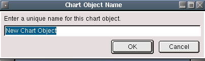
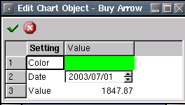
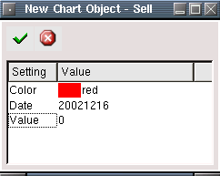
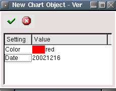
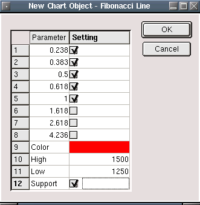
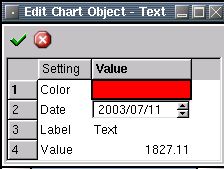
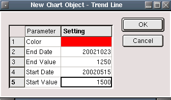

Chart Objects
Description
Chart objects are basic drawing elements that are commonly used in
technical analysis to mark and illustrate various chart properties. The
following chart objects are used in Qtstalker:
- Buy Arrow - a small up pointing arrow
- Sell Arrow - a small down pointing arrow
- Horizontal Line - a horizontal line the extends the width of the
chart area
- Vertical Line - a vertical line that extends the height of the
chart area
- Fibonacci Line - a group of horizontal line(s) that extends the
width of the chart used to indicate a fibonacci retracement level
- Text - plain text
- Trend Line - a line that can can have any angle or length the
user wishes
To create a chart object, right click with the mouse on the chart
you wish to apply it to. This can be either the main chart area or any
of the indicators that appear in the indicator chart area. Select "New
Chart Object" from the popup menu so the following dialog appears:

After selecting the chart object type you want to create, another
dialog will appear asking you to give a unique name to the chart
object. If you enter the name of an existing chart object, an error
message will appear.

After entering the chart object name, the mouse pointer will change
to a hand pointer and a message will display in the status bar
explaining what is needed. Usually, just select the point you want the
chart object to appear by clicking the left mouse button. The object
will then appear on the chart.
Buy Arrow
The buy arrow settings are defined as follows:
- Value - The y point where the arrow will be centered.
- Date - The x point where the arrow be centered.
- Color - The color of the arrow.

Sell Arrow
The sell arrow settings are defined as follows:
- Value - The y point where the arrow will be centered.
- Date - The x point where the arrow be centered.
- Color - The color of the arrow.

Horizontal Line
The horizontal line settings are defined as follows:
- Value - The y point where the line will be centered.
- Color - The color of the line.

Vertical Line
The vertical line settings are defined as follows:
- Date - The x point where the line be centered.
- Color - The color of the line.

Fibonacci Line
The fibonacci line settings are defined as follows:
- High - The high point of the retracement range.
- Support - If checked the fibonacci levels will be support levels.
If not checked, the levels will be resistance levels.
- Low - The low point of the retracement range.
- Color - The color of the line.
- 0.238 - 23.8% level
- 0.383 - 38.3% level
- 0.5 - 50% level
- 0.618 - 61.8% level
- 1 - 100% level
- 1.618 - 161.8% level
- 2.618 - 261.8% level
- 4.236 - 423.6% level

Text
The text settings are defined as follows:
- Value - The y point where the text will be centered.
- Date - The x point where the text will be centered.
- Label - The text that will appear at the Value point.
- Color - The color of the text.

Trend Line
The trend line settings are defined as follows:
- End Date - The ending x point of the trend line.
- Start Date - The starting x point of the trend line.
- Start Value - The starting y point of the trend line.
- End Value - The ending y point of the trend line.
- Color - The color of the trend line.
